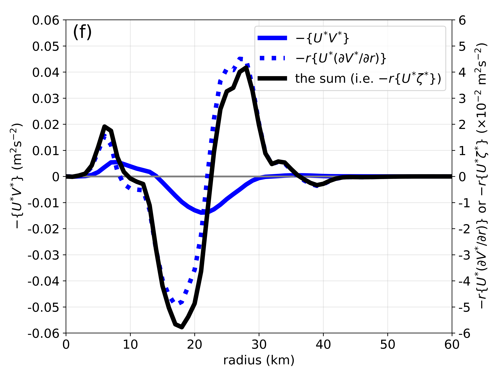
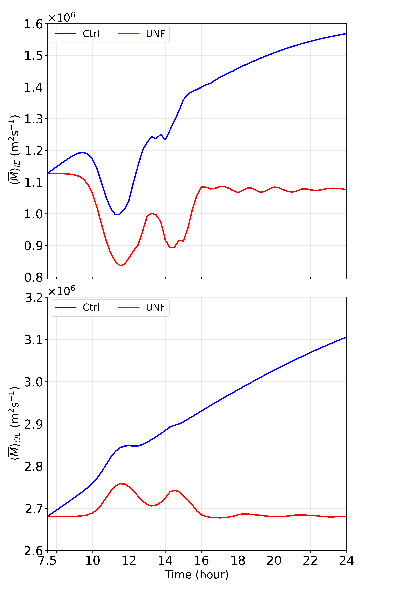
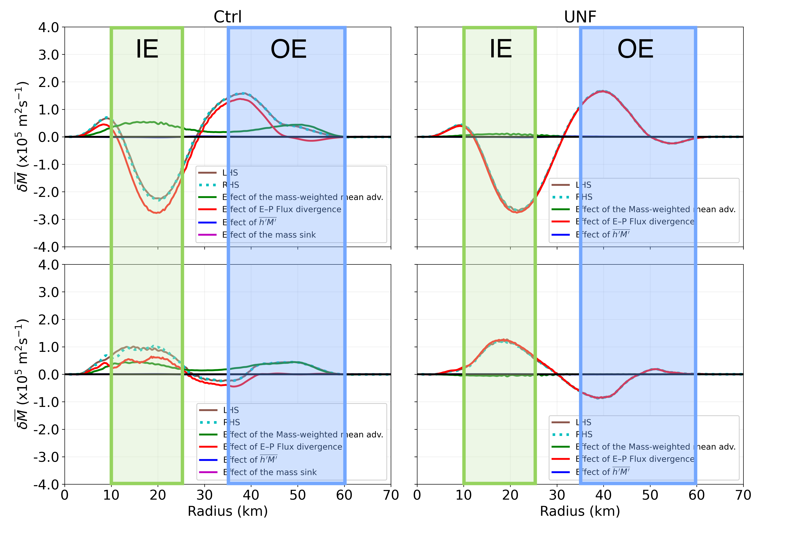

ERCs and the dynamical instability between the two eyewalls
The region of convective minimum and vorticity minimum between the two eyewalls is referred to as a moat. This local vorticity minimum makes the vortex susceptible to the barotropic instability across the moat (a.k.a. the type-2 instability). The figure on the left (from Lai et al. 2019) shows an azimuthal wavenumber-2 (elliptic) evolution associated with the type-2 instability in the simulated Hurricane Wilma (2005) of which the inner eyewall became elliptic before the decay.

Detailed budget analyses of absolute angular momentum [e.g. the figure on the left from Lai, Hendricks, Menelaou, and Yau (2021)] revealed that the radial eddy transport of absolute angular momentum associated with the vorticity mixing of the type-2 instability can significantly weaken the inner eyewall. This effect of the type-2 instability can also work synergistically with the cut-off effect. See Lai, Hendricks, Menelaou, and Yau (2021) for more details.

An in-depth analysis of the most unstable mode of a double-eyewall TC-like vortex revealed that the angular momentum flux was pointing outward from the inner eyewall to the outer eyewall. And there was also divergence of the flux over the inner eyewall and convergence of the flux over the outer eyewall [the figure on the left from Lai, Hendricks, Yau, and Menelaou (2021)]. This demonstrates that the origin of the intensity changes of the eyewalls is the angular momentum transport from the inner eyewall to the outer eyewall by the eddy processes associated with the type-2 instability. See Lai, Hendricks, Yau, and Menelaou (2021) for more details.

The foregoing analyses focused on the first few hours after the onset of the type-2 instability. The long-term effect of the type-2 instability on ERCs is also explored. Both of the forced and unforced shallow-water experiments exhibit weakening–strengthening cycles (WS cycles) [e.g. the figure on the left from Lai, Hendricks, and Yau (2021)] in which the inner eyewalls weaken at first, and then reintensify and weaken again and so on. The trends of the outer eyewalls are reversed. The corresponding rates of change of tangential wind are very substantial during the WS cycles. For example, we see an inner eyewall weakening rate of 21 m/s in 4 hours. See Lai, Hendricks, and Yau (2021) for more details.

By using the mass-weighted budget of absolute angular momentum, we are able to express the eddy processes associated with the type-2 instability in terms of E–P flux divergence which is the dominant term of the budget. During the weakening phase of the WS cycle, there was E–P flux divergence over the inner eyewall and E–P convergence over the outer eyewall [the top panels of the figure on the left from Lai, Hendricks, and Yau (2021)]. The configuration was reversed during the strengthening phase (the bottom panels). These results suggest that the origin of the intensity changes of the two eyewalls during the WS cycle is the angular momentum transport between the two eyewalls. The angular momentum is conserved throughout the eddy processes. See Lai, Hendricks, and Yau (2021) for more details.